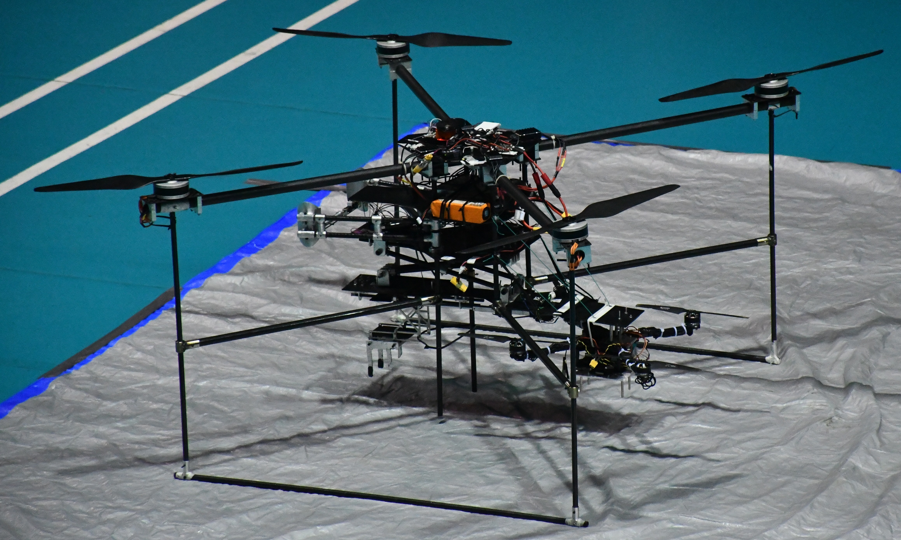

Led a team in the world's longest-running collegiate aerial robotics competition focused on pushing the boundaries of autonomous aerial systems. World Champions of the Simulation Challenge 2020, hosted by AUVSI with teams from 5 continents.

Mission Overview
The Mothership takes off along with the daughtership in tow, and starts taking laps around the Pylon, using GPS Global Waypoint navigation. After the Laps are over, the Daughtership separates from the Mothership, takes off, and starts looking for the Mast. It does so by moving around the mast, and using Machine Learning to detect the Mast Board. It then uses OpenCV to detect the LED Navigation lights, and then orients itself according to their position and orientation.
After it has a good estimate of the mast board location, it approaches the module and starts the "coarse tuning" maneuver, which enables better controls of the end effector. Then, the "fine tuning" maneuver starts, which runs at a faster rate than the "coarse tuning maneuver", and that updates just the end-effector position according to the position of the module. Both of these maneuvers take the module location from the Machine Learning Module, and use PID Controllers to controls the actuators involved.
Once the Module is aligned with the end-effector for a specified minimum amount of time, the end-effector executes the "replacement" maneuver, where it grabs the mast, removes the module, and then places another one in place of it. All this while, the Mothership is returning home. It started that as soon as the daughtership separated from it.
Technical Contributions
Controls
- Designed and implemented a Back-stepping based Sliding mode controller to conduct laps
- Built a PID acceleration controller to track dynamic objects using feedback from RGBD camera
- Ideated and configured control packages for a Custom Robotic Gripper for aerial manipulation
- Designed an IMU-based algorithm for free-fall detection and self-stabilizing using mavros and Ardupilot
- Developed a custom Finite-State-Machine as central Autopilot for decision making & autonomy
Localization
- Setup Real-Time Kinematic (RTK) base station for precise navigation, achieving RTK fix accuracy
- Implemented ORB-SLAM2 using ZED2 RGBD Camera and establishing pose estimation
Mechatronics
- Optimized the CAD; manufactured and assembled a drone of size 2m x 2m with a pressure-sensor actuator-based scissor model
- Designed a custom Robotic Gripper to perform onboard dexterous manipulations
- Developed a low-power decoupling-mechanism to conduct mid-air deployment of daughter drone
- Designed landing-legs for a drone of 15 kg to maintain integrity when maneuvering at high speeds
Project Structure
The project workspace (iarc_ws) contains all of the code along with other packages:
Controls
This folder consists of the Major Autopilot code used for Guidance, Navigation and Replacement of the module, along with a few utilities that assist in the same. It also has the urdf Description packages for the Joint Controllers used in our mechanism.
- autopilot.py - This is the master file that contains the mission logic and handles the GNC of the Mothership and the decision making logic for the whole mission.
- child_node.py - This is the file that controls the Daughtership, and the replacement maneuver. It consists of many classes, each built to suit specific purposes.
Machine Learning
This folder consists of the Machine Learning code used to detect the mast and eventually the module from a respectable distance, to assist in the maneuvering and navigation of the drone towards the module.
Localization
This folder consists of the ORBSLAM2 package that is used by the daughtership for localization when it detaches from the mothership, and is close to the mast. It also has a custom python script that carries out the calculations and handles the frame conversions required to accurately predict the current position.